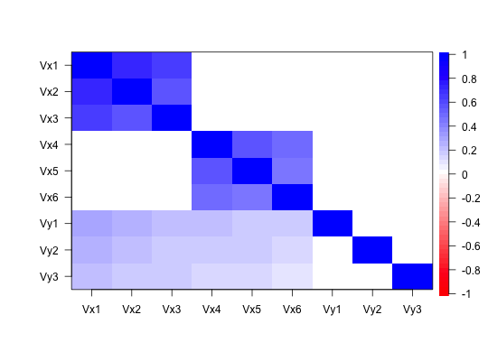
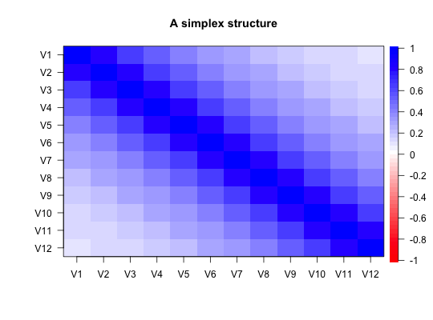
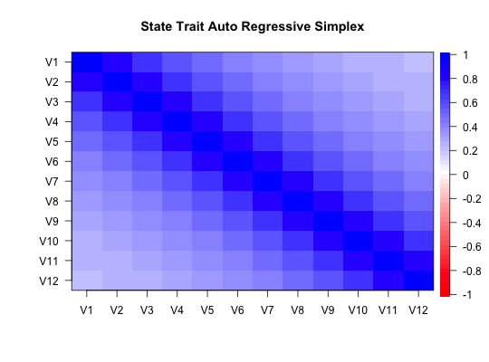

A number of functions in the psych package will generate simulated data with particular structures. These functions include
sim for a factor simplex, and sim.simplex for a data simplex, sim.circ for a circumplex structure, sim.congeneric for a one factor factor congeneric model, sim.dichot to simulate dichotomous items, sim.hierarchical to create a hierarchical factor model, sim.item a more general item simulation,
sim.minor to simulate major and minor factors,
sim.omega to test various examples of omega,
sim.parallel to compare the efficiency of various ways of deterimining the number of factors,
sim.rasch to create simulated rasch data,
sim.irt to create general 1 to 4 parameter IRT data by calling
sim.npl 1 to 4 parameter logistic IRT or
sim.npn 1 to 4 paramater normal IRT,
sim.poly to create polytomous ideas by calling
sim.poly.npn 1-4 parameter polytomous normal theory items or
sim.poly.npl 1-4 parameter polytomous logistic items, and
sim.poly.ideal which creates data following an ideal point or unfolding model by calling
sim.poly.ideal.npn 1-4 parameter polytomous normal theory ideal point model or
sim.poly.ideal.npl 1-4 parameter polytomous logistic ideal point model.
sim.structural a general simulation of structural models, and sim.anova for ANOVA and lm simulations, and sim.VSS. Some of these functions are separately documented and are listed here for ease of the help function. See each function for more detailed help.
sim(fx=NULL,Phi=NULL,fy=NULL,alpha=.8,lambda = 0,n=0,mu=NULL,raw=TRUE) sim.simplex(nvar =12, alpha=.8,lambda=0,beta=1,mu=NULL, n=0) sim.general(nvar=9,nfact =3, g=.3,r=.3,n=0) sim.minor(nvar=12,nfact=3,n=0,g=NULL,fbig=NULL,fsmall = c(-.2,.2),bipolar=TRUE) sim.omega(nvar=12,nfact=3,n=500,g=NULL,sem=FALSE,fbig=NULL,fsmall = c(-.2,.2),bipolar=TRUE,om.fact=3,flip=TRUE,option="equal",ntrials=10) sim.parallel(ntrials=10,nvar = c(12,24,36,48),nfact = c(1,2,3,4,6), n = c(200,400)) sim.rasch(nvar = 5,n = 500, low=-3,high=3,d=NULL, a=1,mu=0,sd=1) sim.irt(nvar = 5, n = 500, low=-3, high=3,a=NULL,c=0,z=1,d=NULL,mu=0,sd=1,mod="logistic") sim.npl(nvar = 5, n = 500, low=-3,high=3,a=NULL,c=0,z=1,d=NULL,mu=0,sd=1) sim.npn(nvar = 5, n = 500, low=-3,high=3,a=NULL,c=0,z=1,d=NULL,mu=0,sd=1) sim.poly(nvar = 5 ,n = 500,low=-2,high=2,a=NULL,c=0,z=1,d=NULL, mu=0,sd=1,cat=5,mod="logistic") sim.poly.npn(nvar = 5 ,n = 500,low=-2,high=2,a=NULL,c=0,z=1,d=NULL, mu=0,sd=1,cat=5) sim.poly.npl(nvar = 5 ,n = 500,low=-2,high=2,a=NULL,c=0,z=1,d=NULL, mu=0,sd=1,cat=5) sim.poly.ideal(nvar = 5 ,n = 500,low=-2,high=2,a=NULL,c=0,z=1,d=NULL, mu=0,sd=1,cat=5,mod="logistic") sim.poly.ideal.npn(nvar = 5,n = 500,low=-2,high=2,a=NULL,c=0,z=1,d=NULL, mu=0,sd=1,cat=5) sim.poly.ideal.npl(nvar = 5,n = 500,low=-2,high=2,a=NULL,c=0,z=1,d=NULL, mu=0,sd=1,cat=5,theta=NULL) sim.poly.mat(R,m,n)
| fx | The measurement model for x. If NULL, a 4 factor model is generated |
|---|---|
| Phi | The structure matrix of the latent variables |
| fy | The measurement model for y |
| mu | The means structure for the fx factors |
| n | Number of cases to simulate. If n=0 or NULL, the population matrix is returned. |
| raw | if raw=TRUE, raw data are returned as well. |
| nvar | Number of variables for a simplex structure |
| nfact | Number of large factors to simulate in sim.minor,number of group factors in sim.general,sim.omega |
| g | General factor correlations in sim.general and general factor loadings in sim.omega and sim.minor |
| sem | Should the sim.omega function do both an EFA omega as well as a CFA omega using the sem package? |
| r | group factor correlations in sim.general |
| alpha | the base correlation for an autoregressive simplex |
| lambda | the trait component of a State Trait Autoregressive Simplex |
| beta | Test reliability of a STARS simplex |
| fbig | Factor loadings for the main factors. Default is a simple structure with loadings sampled from (.8,.6) for nvar/nfact variables and 0 for the remaining. If fbig is specified, then each factor has loadings sampled from it. |
| bipolar | if TRUE, then positive and negative loadings are generated from fbig |
| om.fact | Number of factors to extract in omega |
| flip | In omega, should item signs be flipped if negative |
| option | In omega, for the case of two factors, how to weight them? |
| fsmall | nvar/2 small factors are generated with loadings sampled from (-.2,0,.2) |
| ntrials | Number of replications per level |
| low | lower difficulty for sim.rasch or sim.irt |
| high | higher difficulty for sim.rasch or sim.irt |
| a | if not specified as a vector, the descrimination parameter a = \(\alpha\) will be set to 1.0 for all items |
| d | if not specified as a vector, item difficulties (d = \(\delta\)) will range from low to high |
| c | the gamma parameter: if not specified as a vector, the guessing asymptote is set to 0 |
| z | the zeta parameter: if not specified as a vector, set to 1 |
| sd | the standard deviation for the underlying latent variable in the irt simulations |
| mod | which IRT model to use, mod="logistic" simulates a logistic function, otherwise, a normal function |
| cat | Number of categories to simulate in sim.poly. If cat=2, then this is the same as simulating t/f items and sim.poly is functionally equivalent to sim.irt |
| theta | The underlying latent trait value for each simulated subject |
| R | A correlation matrix to be simulated using the sim.poly.mat function |
| m | The matrix of marginals for all the items |
Simulation of data structures is a very useful tool in psychometric research and teaching. By knowing ``truth" it is possible to see how well various algorithms can capture it. For a much longer discussion of the use of simulation in psychometrics, see the accompany vignettes.
The simulations documented here are a miscellaneous set of functions that will be documented in other help files eventually.
The default values for sim.structure is to generate a 4 factor, 12 variable data set with a simplex structure between the factors. This, and the simplex of items (sim.simplex) can also be converted in a STARS model with an autoregressive component (alpha) and a stable trait component (lambda).
Two data structures that are particular challenges to exploratory factor analysis are the simplex structure and the presence of minor factors. Simplex structures sim.simplex will typically occur in developmental or learning contexts and have a correlation structure of r between adjacent variables and r^n for variables n apart. Although just one latent variable (r) needs to be estimated, the structure will have nvar-1 factors.
An alternative version of the simplex is the State-Trait-Auto Regressive Structure (STARS) which has both a simplex state structure, with autoregressive path alpha and a trait structure with path lambda. This simulated in sim.simplex by specifying a non-zero lambda value.
Many simulations of factor structures assume that except for the major factors, all residuals are normally distributed around 0. An alternative, and perhaps more realistic situation, is that the there are a few major (big) factors and many minor (small) factors. The challenge is thus to identify the major factors. sim.minor generates such structures. The structures generated can be thought of as havinga a major factor structure with some small correlated residuals. To make these simulations complete, the possibility of a general factor is considered. For simplicity, sim.minor allows one to specify a set of loadings to be sampled from for g, fmajor and fminor. Alternatively, it is possible to specify the complete factor matrix.
Another structure worth considering is direct modeling of a general factor with several group factors. This is done using sim.general.
Although coefficient \(\omega\) is a very useful indicator of the general factor saturation of a unifactorial test (one with perhaps several sub factors), it has problems with the case of multiple, independent factors. In this situation, one of the factors is labelled as ``general'' and the omega estimate is too large. This situation may be explored using the sim.omega function with general left as NULL. If there is a general factor, then results from sim.omega suggests that omega estimated either from EFA or from SEM does a pretty good job of identifying it but that the EFA approach using Schmid-Leiman transformation is somewhat more robust than the SEM approach.
The four irt simulations, sim.rasch, sim.irt, sim.npl and sim.npn, simulate dichotomous items following the Item Response model. sim.irt just calls either sim.npl (for logistic models) or sim.npn (for normal models) depending upon the specification of the model.
The logistic model is $$P(i,j) = \gamma + \frac{\zeta-\gamma}{1+ e^{\alpha(\delta-\theta)}}$$ where \(\gamma\) is the lower asymptote or guesssing parameter, \(\zeta\) is the upper asymptote (normally 1), \(\alpha\) is item discrimination and \(\delta\) is item difficulty. For the 1 Paramater Logistic (Rasch) model, gamma=0, zeta=1, alpha=1 and item difficulty is the only free parameter to specify.
For the 2PL and 2PN models, a = \(\alpha\) and d = \(\delta\) are specified.
For the 3PL or 3PN models, items also differ in their guessing parameter c =\(\gamma\).
For the 4PL and 4PN models, the upper asymptote, z= \(\zeta\) is also specified.
(Graphics of these may be seen in the demonstrations for the logistic function.)
The normal model (irt.npn calculates the probability using pnorm instead of the logistic function used in irt.npl, but the meaning of the parameters are otherwise the same. With the a = \(\alpha\) parameter = 1.702 in the logistic model the two models are practically identical.
In parallel to the dichotomous IRT simulations are the poly versions which simulate polytomous item models. They have the additional parameter of how many categories to simulate. In addition, the sim.poly.ideal functions will simulate an ideal point or unfolding model in which the response probability varies by the distance from each subject's ideal point. Some have claimed that this is a more appropriate model of the responses to personality questionnaires. It will lead to simplex like structures which may be fit by a two factor model. The middle items form one factor, the extreme a bipolar factor.
The previous functions all assume one latent trait. Alternatively, we can simulate dichotomous or polytomous items with a particular structure using the sim.poly.mat function. This takes as input the population correlation matrix, the population marginals, and the sample size. It returns categorical items with the specified structure.
Other simulation functions in psych are:
sim.structure A function to combine a measurement and structural model into one data matrix. Useful for understanding structural equation models. Combined with structure.diagram to see the proposed structure.
sim.congeneric A function to create congeneric items/tests for demonstrating classical test theory. This is just a special case of sim.structure.
sim.hierarchical A function to create data with a hierarchical (bifactor) structure.
sim.item A function to create items that either have a simple structure or a circumplex structure.
sim.circ Create data with a circumplex structure.
sim.dichot Create dichotomous item data with a simple or circumplex structure.
sim.minor Create a factor structure for nvar variables defined by nfact major factors and nvar/2 ``minor" factors for n observations.
Although the standard factor model assumes that K major factors (K << nvar) will account for the correlations among the variables $$R = FF' + U^2$$ where R is of rank P and F is a P x K matrix of factor coefficients and U is a diagonal matrix of uniquenesses. However, in many cases, particularly when working with items, there are many small factors (sometimes referred to as correlated residuals) that need to be considered as well. This leads to a data structure such that $$R = FF' + MM' + U^2$$ where R is a P x P matrix of correlations, F is a P x K factor loading matrix, M is a P x P/2 matrix of minor factor loadings, and U is a diagonal matrix (P x P) of uniquenesses.
Such a correlation matrix will have a poor \(\chi^2\) value in terms of goodness of fit if just the K factors are extracted, even though for all intents and purposes, it is well fit.
sim.minor will generate such data sets with big factors with loadings of .6 to .8 and small factors with loadings of -.2 to .2. These may both be adjusted.
sim.parallel Create a number of simulated data sets using sim.minor to show how parallel analysis works. The general observation is that with the presence of minor factors, parallel analysis is probably best done with component eigen values rather than factor eigen values, even when using the factor model.
sim.anova Simulate a 3 way balanced ANOVA or linear model, with or without repeated measures. Useful for teaching research methods and generating teaching examples.
sim.multilevel To understand some of the basic concepts of multilevel modeling, it is useful to create multilevel structures. The correlations of aggregated data is sometimes called an 'ecological correlation'. That group level and individual level correlations are independent makes such inferences problematic. This simulation allows for demonstrations that correlations within groups do not imply, nor are implied by, correlations between group means.
Revelle, W. (in preparation) An Introduction to Psychometric Theory with applications in R. Springer. at http://personality-project.org/r/book/
See above
simplex <- sim.simplex() #create the default simplex structure lowerMat(simplex) #the correlation matrix#> V1 V2 V3 V4 V5 V6 V7 V8 V9 V10 V11 #> V1 1.00 #> V2 0.80 1.00 #> V3 0.64 0.80 1.00 #> V4 0.51 0.64 0.80 1.00 #> V5 0.41 0.51 0.64 0.80 1.00 #> V6 0.33 0.41 0.51 0.64 0.80 1.00 #> V7 0.26 0.33 0.41 0.51 0.64 0.80 1.00 #> V8 0.21 0.26 0.33 0.41 0.51 0.64 0.80 1.00 #> V9 0.17 0.21 0.26 0.33 0.41 0.51 0.64 0.80 1.00 #> V10 0.13 0.17 0.21 0.26 0.33 0.41 0.51 0.64 0.80 1.00 #> V11 0.11 0.13 0.17 0.21 0.26 0.33 0.41 0.51 0.64 0.80 1.00 #> V12 0.09 0.11 0.13 0.17 0.21 0.26 0.33 0.41 0.51 0.64 0.80 #> [1] 1.00#> V1 V2 V3 V4 #> V1 1.00 #> V2 0.56 1.00 #> V3 0.48 0.42 1.00 #> V4 0.40 0.35 0.30 1.00#> V1 V2 V3 V4 V5 V6 V7 V8 V9 #> V1 1.00 #> V2 0.56 1.00 #> V3 0.48 0.42 1.00 #> V4 0.40 0.35 0.30 1.00 #> V5 0.35 0.30 0.26 0.42 1.00 #> V6 0.29 0.25 0.22 0.35 0.30 1.00 #> V7 0.30 0.26 0.23 0.24 0.20 0.17 1.00 #> V8 0.25 0.22 0.19 0.20 0.17 0.14 0.30 1.00 #> V9 0.20 0.18 0.15 0.16 0.13 0.11 0.24 0.20 1.00#now simulate categorical items with the hierarchical factor structure. #Let the items be dichotomous with varying item difficulties. marginals = matrix(c(seq(.1,.9,.1),seq(.9,.1,-.1)),byrow=TRUE,nrow=2) X <- sim.poly.mat(R=R,m=marginals,n=1000) lowerCor(X) #show the raw correlations#> C1 C2 C3 C4 C5 C6 C7 C8 C9 #> R1 1.00 #> R2 0.37 1.00 #> R3 0.39 0.27 1.00 #> R4 0.22 0.30 0.15 1.00 #> R5 0.21 0.20 0.18 0.22 1.00 #> R6 0.15 0.21 0.11 0.28 0.11 1.00 #> R7 0.24 0.12 0.18 0.10 0.14 0.06 1.00 #> R8 0.15 0.20 0.08 0.14 0.08 0.09 0.17 1.00 #> R9 0.17 0.12 0.17 0.13 0.17 0.07 0.21 0.14 1.00#lowerMat(tetrachoric(X)$rho) # show the tetrachoric correlations (not run) #generate a structure fx <- matrix(c(.9,.8,.7,rep(0,6),c(.8,.7,.6)),ncol=2) fy <- c(.6,.5,.4) Phi <- matrix(c(1,0,.5,0,1,.4,0,0,0),ncol=3) R <- sim.structure(fx,Phi,fy) cor.plot(R$model) #show it graphicallysimp <- sim.simplex() #show the simplex structure using cor.plot cor.plot(simp,colors=TRUE,main="A simplex structure")#Show a STARS model simp <- sim.simplex(alpha=.8,lambda=.4) #show the simplex structure using cor.plot cor.plot(simp,colors=TRUE,main="State Trait Auto Regressive Simplex" )